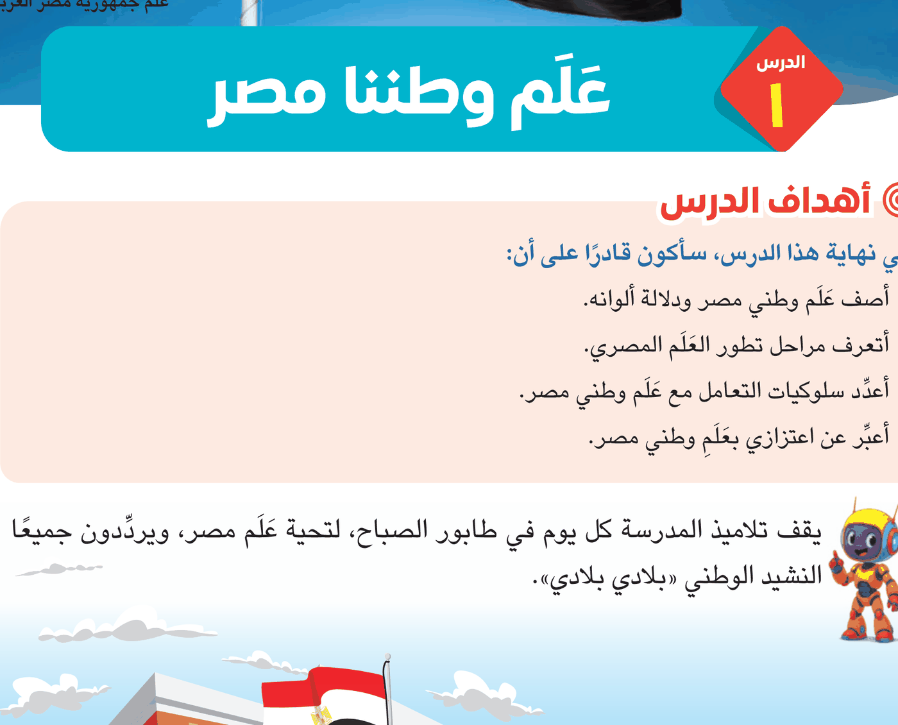

الوحدة الثالثة: مصر وطننا • الجزء الأول
العلم: هو رمز للدولة وتاريخها وأصالتها، ويرفع في جميع المؤسسات الحكومية والمدارس والمؤتمرات والمناسبات الوطنية والسفارات بالخارج. ويتكون علم مصر من مستطيل يضم ثلاثة ألوان ونسراً ذهبياً في المنتصف:

| عنصر العلم | الدلالة والرمزية الوطنية والتاريخية |
|---|---|
| اللون الأحمر (الأعلى) | يرمز إلى مرحلة النضال ودماء الشهداء الطاهرة التي ضحى بها أبطال مصر من أجل الحرية والاستقلال. |
| اللون الأبيض (الوسط) | يرمز إلى السلام والصفاء والأمان الذي تنعم به مصر وتنشره بين دول العالم. |
| اللون الأسود (الأسفل) | يرمز إلى عصور الظلم والاستعمار الأجنبي التي عاشتها مصر قبل أن تتحرر وتسترد سيادتها. |
| النسر الذهبي (الوسط) | نسر صلاح الدين الأيوبي، لونه أصفر ذهبي، يتوسط اللون الأبيض، ويرمز إلى قوة مصر وعراقة حضارتها وشجاعة شعبها. |
تقع مصر في الركن الشمالي الشرقي لقارة إفريقيا، وتُعد قلب العالم القديم، حيث تلتقي وتجاور قارات العالم القديم الثلاث: (آسيا، إفريقيا، أوروبا).

| الجهة الجغرافية | الحدود الطبيعية والبشرية لمصر |
|---|---|
| الشمال | حدود بحرية طبيعية: البحر المتوسط (يفصل مصر عن قارة أوروبا). |
| الشرق | حدود بحرية وبرية: البحر الأحمر وخليج العقبة والسويس، ودولة فلسطين الشقيقة في الشمال الشرقي. |
| الجنوب | حدود برية بشرية: جمهورية السودان الشقيقة. |
| الغرب | حدود برية بشرية: دولة ليبيا الشقيقة. |
• تربط قناة السويس بين البحر المتوسط والبحر الأحمر، وهي أهم ممر ملاحي تجاري في العالم.
• قناة السويس الجديدة (2015): ضاعفت حركة السفن، وسمحت بمرور السفن العملاقة في الاتجاهين دون توقف، وقللت زمن الرحلة من 20 ساعة إلى 11 ساعة فقط، مما زاد من دخل مصر القومي.
( أ- دماء الشهداء | ب- السلام | جـ- عصور الاستعمار | د- الحرب )
( أ- البحر الأحمر | ب- البحر المتوسط | جـ- دولة السودان | د- دولة ليبيا )
( أ- 5 ساعات | ب- 11 ساعة | جـ- 20 ساعة | د- 24 ساعة )
( أ- الأحمر | ب- الأسود | جـ- الأبيض | د- الأخضر )
( أ- الشمال | ب- الجنوب | جـ- الشرق | د- الغرب )
الإجابة: ................................................................................................................................................................................
الإجابة: ................................................................................................................................................................................
الإجابة: ................................................................................................................................................................................
1- عَلَم الدولة (رمز السيادة الوطنية والأصالة التاريخية).
2- نسر صلاح الدين الأيوبي (يرمز للشجاعة والقوة وعراقة حضارة مصر).
3- قناة السويس (أهم مجرى ملاحي صناعي يربط الشرق بالغرب).
4- قارة إفريقيا (تقع مصر في ركنها الشمالي الشرقي).
5- قارات آسيا وإفريقيا وأوروبا (قارات العالم القديم الثلاث).
(1) ب- السلام | الأبيض رمز السلام والصفاء دائماً.
(2) ب- البحر المتوسط | الحد الشمالي البحري لمصر.
(3) ب- 11 ساعة | تم خفض زمن الانتظار والعبور من 20 إلى 11 ساعة بالقناة الجديدة.
(4) أ- الأحمر | يرمز لدماء الشهداء الزكية ونضال الشعب.
(5) ب- الجنوب | تحد مصر من الجنوب دولة السودان الشقيقة.
(1) ( ✓ ) صواب. مادة دستورية صريحة لحماية رمز وكرامة الوطن.
(2) ( ✗ ) خطأ. التصويب: تقع مصر في قارة إفريقيا وتطل على البحرين المتوسط والأحمر.
(3) ( ✓ ) صواب. تذكرة للأجيال بمعاناة الاستعمار وقيمة الحرية والاستقلال.
(4) ( ✗ ) خطأ. التصويب: يحد مصر من جهة الغرب دولة ليبيا الشقيقة وهي حدود برية.
(5) ( ✓ ) صواب. ولحنه الموسيقار العبقري سيد درويش.
السؤال الرابع: (1) صلاح الدين الأيوبي | (2) البحر الأحمر.
السؤال الخامس (بم تفسر):
(1) لأنها تقع في قلب قارات العالم القديم الثلاث (آسيا وإفريقيا وأوروبا)، وتطل على بحرين تجاريين هامين يربط بينهما ممر قناة السويس الملاحي العالمي.
(2) تعبيراً عن حب الوطن والانتماء له، واحتراماً لرمز الدولة وسيادتها وتضحيات شهدائها الأبرار.
السؤال السادس (ما النتائج المترتبة على):
(1) تقليل زمن عبور السفن من 20 إلى 11 ساعة، واستيعاب السفن الأكبر حجماً وحمولة، والسماح بالمرور في الاتجاهين، وزيادة الدخل القومي لمصر.